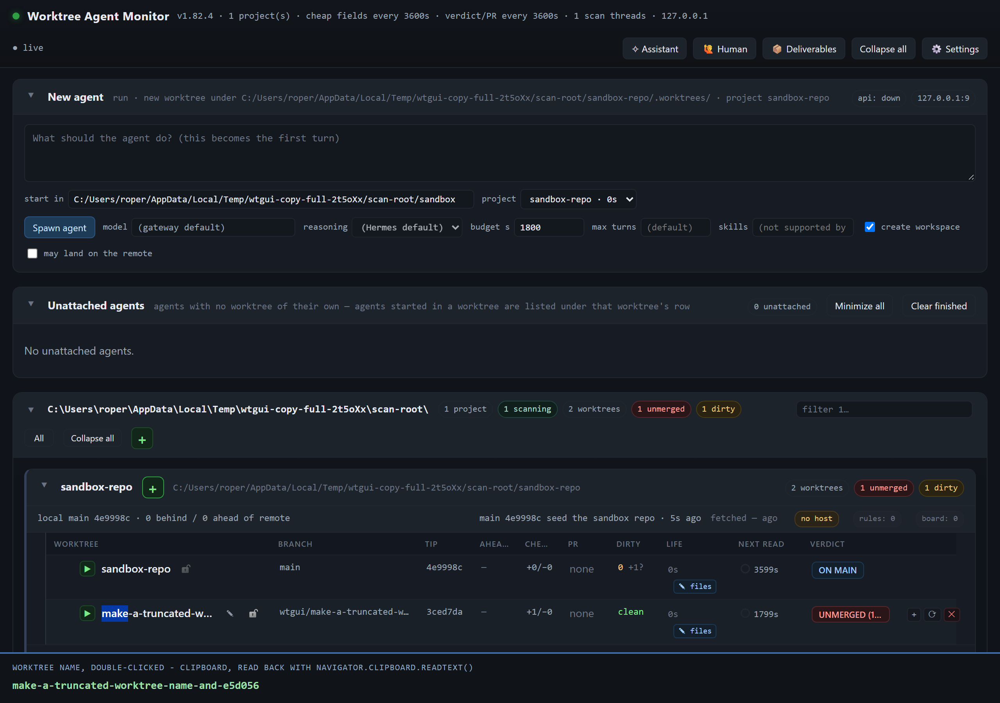
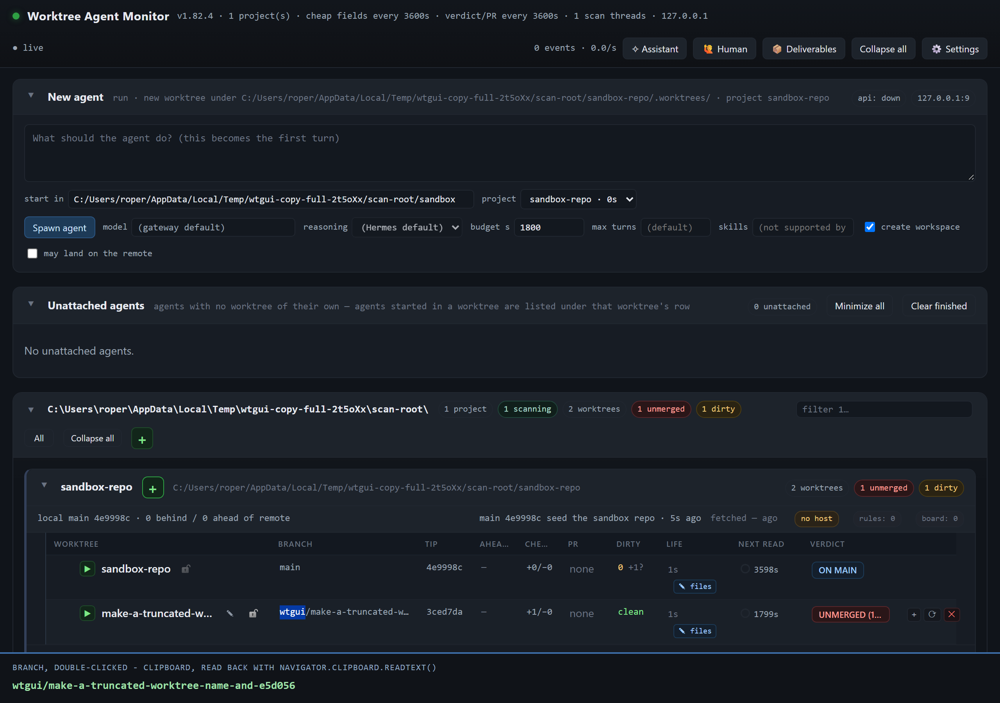
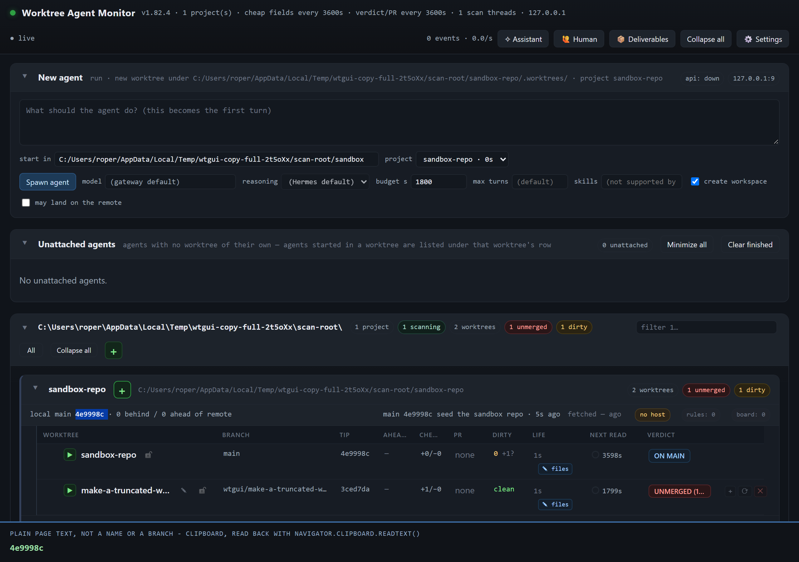

The truncated worktree name and branch, copied whole
agent-worktree-gui/.worktrees/make-a-truncated-worktree-name-and-e5d056 on
wtgui/make-a-truncated-worktree-name-and-e5d056 · cut from main at
c0188ebb, rebased onto origin/main e5b4dbd6 (v1.82.4) when main moved ·
written 2026-11-11 · panel never restarted: the browser half runs against its own sandbox panel on a free port
The bug
Two rules cut the text and only the text:
public/chart.css:83 ellipsises td.name, td.owner, td.pr,
td.verdict and td.branch, and public/chart.css:113 ellipsises the name
inside the first one, td.name .row-name. An ellipsis is a drawing: the DOM still holds the whole
name, but the browser's own copy takes what the SELECTION covers, and a selection covers what is painted.
So a double-click on the name selected one word of the cut string, a drag selected only the painted
characters, and Ctrl+C delivered make-a-truncated-worktree-name-and-e5... - a name that cannot be
pasted anywhere. The same on the branch.
What changed
The clipboard, and nothing else. No CSS, no column widths, no ellipsis: the chart still cuts both cells, which the captures below show. Three pieces:
- the whole value rides on the cell.
td.nameandtd.branchcarrydata-copy-value, written by the one function that draws them (rowHtmlinpublic/render-projects.js). Notdata-copy: that attribute is the console's block-lift mechanism, and any element wearing it grows a copy button on hover, which inside a chart cell would be a new control in the row. Not the cell'stitleeither - the name cell's title is the tree's path and the branch cell's is the sentence about the remote, so neither is the value; - one listener, in its own file.
public/core/copy-full-value.jsis a classic script registered inpublic/index.html, not code added topublic/app.js: it holds no nodes, so a repainted row cannot orphan it, and the row that needsapp.jsis not blocked by this one. On acopyevent it resolves the cell from the selection anchor (a text node inside.row-name, the branch's own link, or the cell itself) and acts only when all three hold:
td.name or a td.branch. A copy anywhere else - another
cell, the console, the page - is left completely alone: nothing is written and preventDefault is
never calledscrollWidth is wider than its
clientWidth, so a name that fits copies exactly as the reader selected itThen, and only then, the whole value goes on the clipboard as text/plain and the event is
cancelled, so the browser cannot append or replace it with the fragment.
| File | What it is |
|---|---|
public/core/copy-full-value.js | new: the document-level copy handler and its three
bounds, published on globalThis.wtCopyFull so the unit test can drive it |
public/render-projects.js | the two cells carry data-copy-value: the whole
name, and the branch itself (never the cell's text, which also holds a chip and a padlock) |
public/index.html | one script tag for the module, after /dom.js |
test/copy-full-value.test.js | new: six cases, page-shaped stubs, no browser |
tools/verify-copy-full-name.mjs | new: the real thing in Chromium - double-click,
Ctrl+C, navigator.clipboard.readText() - and the three captures |
docs/assets/copy-full-name/*.png | the captures: a name and a branch copied whole, and a copy elsewhere left as the browser made it |
Red first, then green
The tests were written against the base build and run there before a line of the fix existed. From a clean
export of origin/main (git archive, no worktree) with only the new test file copied in:
base export, node --test test/copy-full-value.test.js ✖ the row's name and branch cells carry the whole value, not only the text they draw ✖ a truncated worktree name copies whole ✖ a truncated branch copies whole ✖ a caret sitting in a truncated name copies whole too ✖ a copy outside the name and branch cells is the browser's own, untouched ✖ a name that fits its column is left to the browser tests 6 pass 0 fail 6
and the browser harness, run against the same base export, fails exactly the four checks that are the bug - the two attributes and the two copies - while the layout and the outside-copy checks pass, which is what says the harness measures the defect and not itself:
base export, node tools/verify-copy-full-name.mjs FAIL td.name carries the whole worktree name FAIL td.branch carries the whole branch FAIL Ctrl+C on the truncated worktree name puts the WHOLE name on the clipboard FAIL Ctrl+C on the truncated branch puts the WHOLE branch on the clipboard 11/15 checks
On this branch the same two runs are 6/6 and 15/15.
The captures: a name and a branch, copied whole
Each frame is one screenshot of the sandbox board: the row on the left still carries the ellipsis and the
selection is still only the word that was double-clicked, and the strip at the bottom carries the text
navigator.clipboard.readText() returned AFTER the Ctrl+C. The strip is written from that read, not
from the name this harness knows.

make-a-truncated-w... and the double-click selected
make; the clipboard holds make-a-truncated-worktree-name-and-e5d056.
wtgui/make-a-truncated-w... and the double-click selected
wtgui; the clipboard holds wtgui/make-a-truncated-worktree-name-and-e5d056.
public/chart.css:38 makes every cell from the third on unselectable on purpose, so the name
and the branch are the only selectable text a row has.)The runs
| Command | Answer |
|---|---|
npm run test:changed |
51 files, 447 tests: 445 pass, 2 fail - both red on the
base build too, checked by running the same two files in the base export:
pass 12, fail 2, the same two. |
npm test |
2550 tests, 2539 pass, 11 fail, 807 s. The same eleven
fail in the clean export of origin/main (the eight files assistant-profile,
gateway-permissions, harness, header-controls, paths,
pipeline-bench - four cases - windows-hide and worktree-assistant:
pass 65, fail 11 there), so none of them is this change. Note the sweep needs a quiet machine:
the first attempt sat blocked for twelve minutes on four abandoned node --test parents from
earlier runs (started 06:39, 16:35 and 22:04) that still held ports; with those gone the sweep took 807 s. |
npm run verify:copy-full-name |
15/15 checks, three captures written |
node tools/absolute-paths.mjs |
clean: 1544 tracked files, nothing new |
What is deliberately not changed
- The ellipsis:
public/chart.cssandpublic/style.cssare not in this diff at all, and the harness asserts the computedtext-overflow: ellipsisandscrollWidth > clientWidthon both cells after the copy. - The layout: no column, width, padding or cell class was touched; the value is a data attribute.
- The browser's copy everywhere else: the handler returns before writing or cancelling anything.
- The panel: it was not restarted. The browser half boots a throwaway panel on its own free port with a dead apiServer, so the live board and the live gateway were never in the loop.